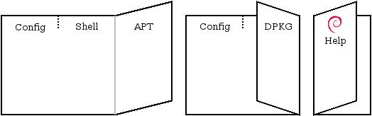

29 de septiembre de 2026
El aprendizaje de Debian
Cuaderno de estudio de la Debian Reference (version 2.100) Manual de usuario de Debian 12 (Bookworm)
de Osamu Aoki (青木 修).
Tarjeta de referencia
La refcard es la tarjeta de referencia del Debian Documentation Project (DDP): una hoja con seis columnas, tres por cara, hecha para imprimir y plegar. La tarjeta deja a mano los comandos para consultar ayuda, configurar el sistema y manejar paquetes.

Se puede ver la versión de Osmancito de la Refcard aquí: Osmancito Refcard v.12
De dónde salen las cosas
Un sistema Debian no viene con un único manual sino con una red de fuentes, y saber cuál abrir ahorra mucho tiempo. Estas son las principales, cada una con su oficio.
Para conseguir el sistema en sí (o uno anterior) está el archivo de imágenes ISO de Debian: ahí quedan guardadas todas las versiones, útil cuando uno quiere instalar justo Bookworm y no la última versión.
La puerta principal a la documentación es la página de manuales para usuarios de Debian. Es el índice de todo el proyecto: la FAQ de GNU/Linux, la Guía de instalación, las Notas de la versión, la Tarjeta de referencia, el Administrator’s Handbook, la Debian Reference (el manual de este cuaderno), el manual de Aptitude, la guía de APT, la FAQ de Java y hasta una guía para radioaficionados. Cuando no se sabe por dónde empezar, se empieza aquí.
La tarjeta de referencia tiene su propia casa: el repositorio refcard en Salsa, donde viven su texto fuente y los archivos para imprimirla.
Para el entorno de escritorio GNOME, la ayuda es el manual de lo que se ve y se hace con el ratón, la otra cara de lo que aquí se estudia desde la consola.
Y para saber qué hay disponible, el buscador de paquetes de Debian Bookworm dice qué paquetes existen en esta versión, qué contienen y de qué dependen. Como ejemplo, la página del paquete debian-reference muestra de dónde sale el manual que se estudia aquí, con su versión 2.100 de Bookworm.